bio.viz gsm.bio release review 2026-10-05
The first release gave four biomarker charts whose every test is R’s. This one adds two charts, a cross-tabulation and survival curves split at a biomarker cut, and gives every chart a way out of the browser: a title and footnotes that say what it shows, a picture and two CSV files to download, and a saved view that rebuilds it. On the R side, gsm.bio draws the same six charts as widgets, static figures and statistics tables, and runs saved views in batch, across every biomarker if asked. Below, each piece is shown on the live site with the numbers you should see.
6 charts, 2 of them new in R: 6 widgets, 6 figures, 6 tables, RTF and a batch runner made-up study: 200 participants, 12 biomarkers, one survival endpoint bio.viz v0.2.0, released; gsm.bio dev at d24f804
Where the two stand
bio.viz v0.2.0 is released (its release notes), and the bio.viz captures and links on this page are of its released site. gsm.bio v0.2.0 is the release candidate awaiting approval: its release preparation is on dev, carrying a copy of bio.viz v0.2.0 that is byte for byte the released one, and its captures are of that.
What to look at
Is this category associated with that one? A two-way table of counts with its totals and percentages, the same numbers as stacked bars, and R’s chi-square or Fisher’s exact test. Either side can be a column of the participant table or a biomarker cut into groups at its median, tertiles, quartiles or points you type. A cut is worked out by the same rule in the browser and in R: R’s quantile() with its default, and a value that falls on a point goes in the lower group.
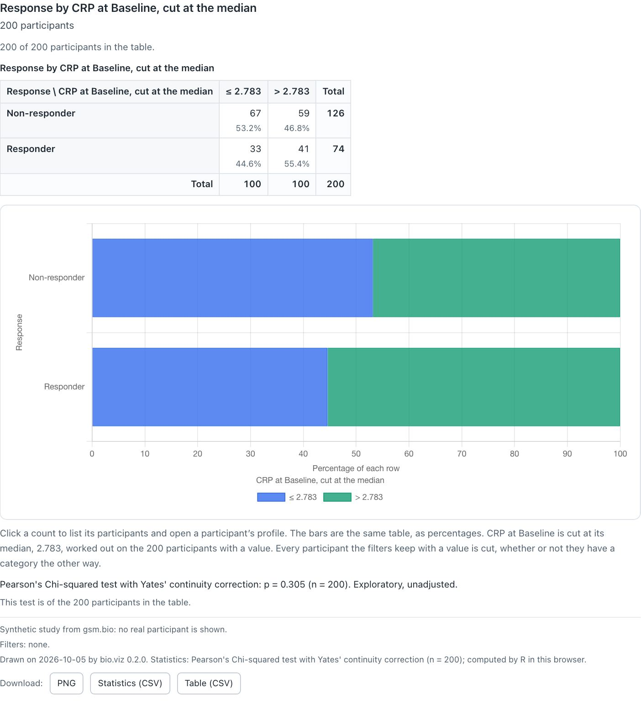
Response by CRP at Baseline, cut at its median of 2.783. The note under the bars says where the cut fell and on how many participants it was worked out. The last footnote is the chart’s own.
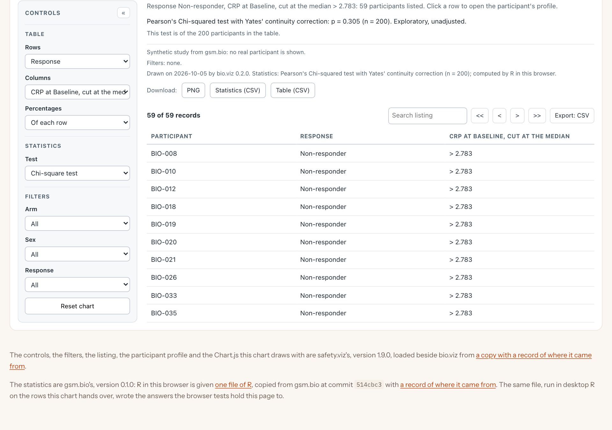
Clicking a count lists those participants, and a row of the listing opens the participant profile. This is safety.viz’s listing and profile, the same parts the other charts use.
What you should see
Try it
Open the cross-tabulationDo participants with high and low levels of this biomarker have different outcomes? Kaplan–Meier curves for each group, with censor marks and the number at risk, above a histogram of the biomarker that shows where the cut falls and how many land each side. Under it are R’s log-rank test, each group’s median with its interval and, for two groups, the hazard ratio. The made-up study planted a survival effect in CRP at Baseline, and the demo opens there.
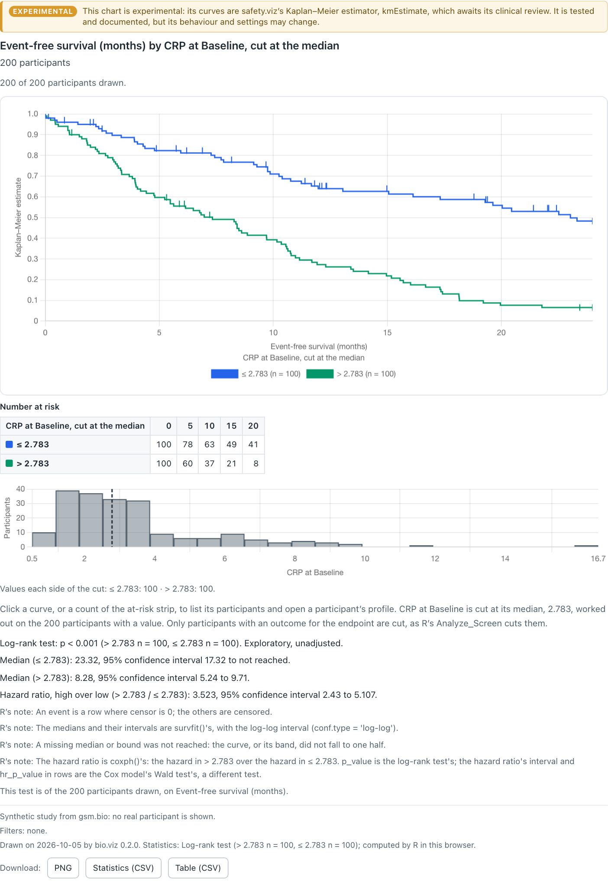
At the median: 100 participants each side. The two curves separate early and stay apart.
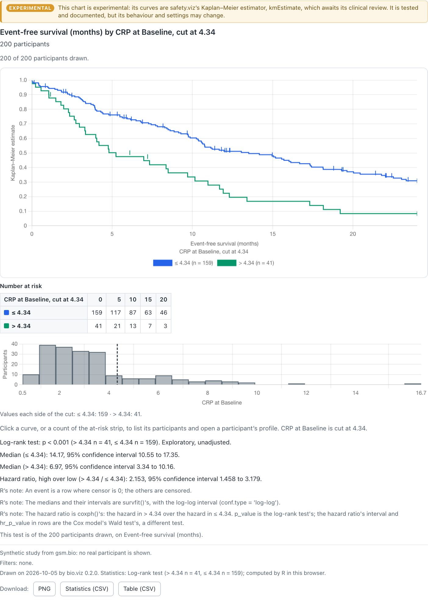
The cut line dragged to 4.34. While it moves the curves follow at once and the statistics line says R will be asked when it is let go; on release R answers for the new groups.
What you should see
survfit()’s with the log-log interval, and the hazard ratio is coxph()’s, a different test from the log-rank p-value.Try it
Open stratified survivalMarked experimental
The curves are drawn by safety.viz’s Kaplan–Meier estimator, held step by step to R’s survfit(), and that estimator still awaits its clinical review, so the chart carries an Experimental banner above its title. Every test and interval printed under it is R’s; no confidence band is computed in the browser.
The screen runs one comparison across every biomarker, a row each. Given the study’s outcomes table it now offers a third comparison beside a difference and a correlation: each biomarker cut at its own median, and the hazard ratio of high against low on an endpoint, with log-rank p-values adjusted across the rows. A row opens that biomarker in the stratified survival chart, at the screen’s own cut.
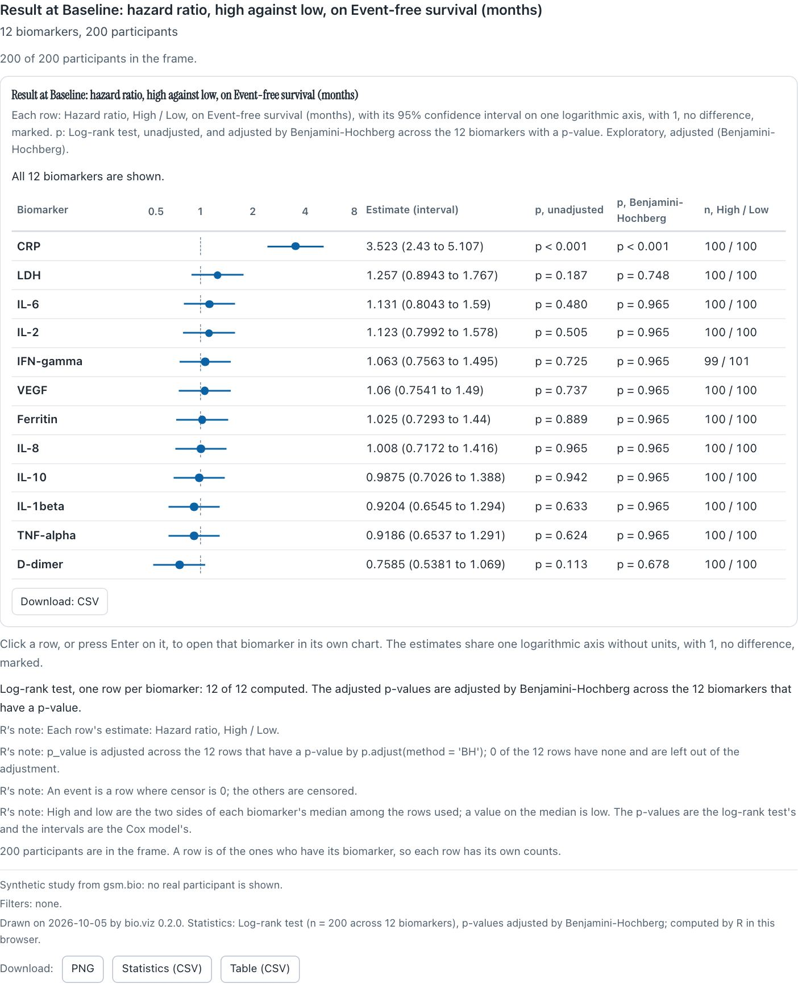
Hazard ratio, high against low, for every biomarker at Baseline. CRP is the only row whose interval clears 1.
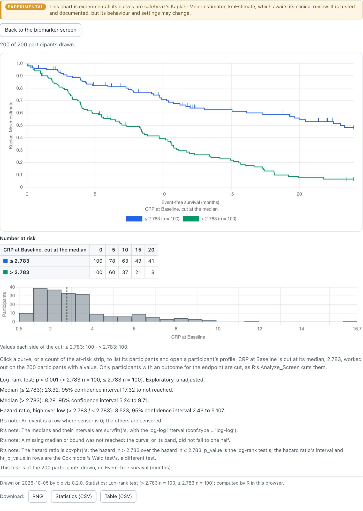
The CRP row opened: the same cut, the same curves and the same 3.523, with a way back to the screen.
What you should see
Try it
Open the biomarker screenEverything a chart shows can now leave the browser and still say what it is. Each of the six charts takes a title, a subtitle and footnotes, written with placeholders the chart fills from the view it draws, and always adds a footnote of its own last. Under the footnotes are three downloads, and behind them a specification: the chart’s settings and filters as plain data, which rebuilds the same chart in a browser or in R.
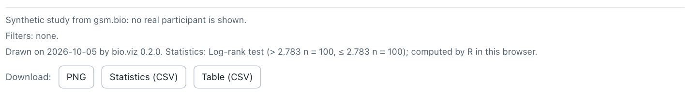
The chart’s own footnote names the date, the bio.viz version, every method R used with its counts, and which R computed it. A build that is not a release says “with development changes”, so the footnote never names a release for code that is not one.
A chart’s specification() returns its view as data: what it is, which chart, every setting as the controls now read (37 for this chart) and the filters in force. BioViz.fromSpecification() makes the same chart from it. Nothing in it is run: a title that looks like code is drawn as text, and anything that is not plain data is refused with a sentence that says why.
{
"format": "bio.viz specification",
"format_version": 1,
"chart": "stratified-survival",
"settings": {
"endpoint": "EFS",
"group_by": { "measure": "CRP", "visit": "Baseline",
"value": "raw", "cut": "median" },
"title": "{endpoint} by {group}",
…
},
"filters": []
}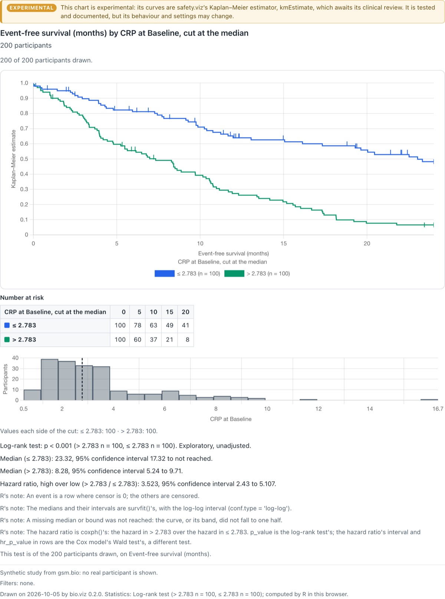
The PNG the button saved, as a file.
What you should see
Try it
Open stratified survivalread.csv().JSON.stringify(BioVizDemo.chart.specification()).gsm.bio draws the two new charts from R as widgets, Widget_CrossTab and Widget_StratifiedSurvival, which take the study’s outcomes table. As with the first four, R computes every statistic the chart will ask for when the widget is made and stores it in the page, so a widget saved as one file needs no R and no network. Every widget now also takes the charts’ titles and footnotes, and its own footnote names the R and gsm.bio that computed what it stores.
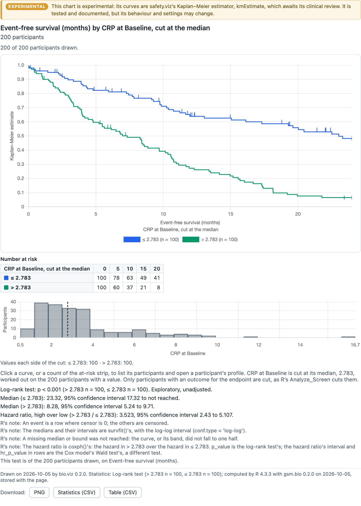
The survival widget, saved with htmlwidgets::saveWidget(selfcontained = TRUE) and opened alone from disk with the network off. The numbers are the live demo’s exactly, and the footnote says they were stored, not computed here.
Six Visualize_*() functions, one per chart, return a ggplot2 figure of the view the chart opens on, from the same settings, with the same statistics printed under it and the same footnote rules. They are for documents: a vector figure, where the browser’s PNG is a picture of the page. The survival figure draws R’s own survfit() curves with their confidence bands.
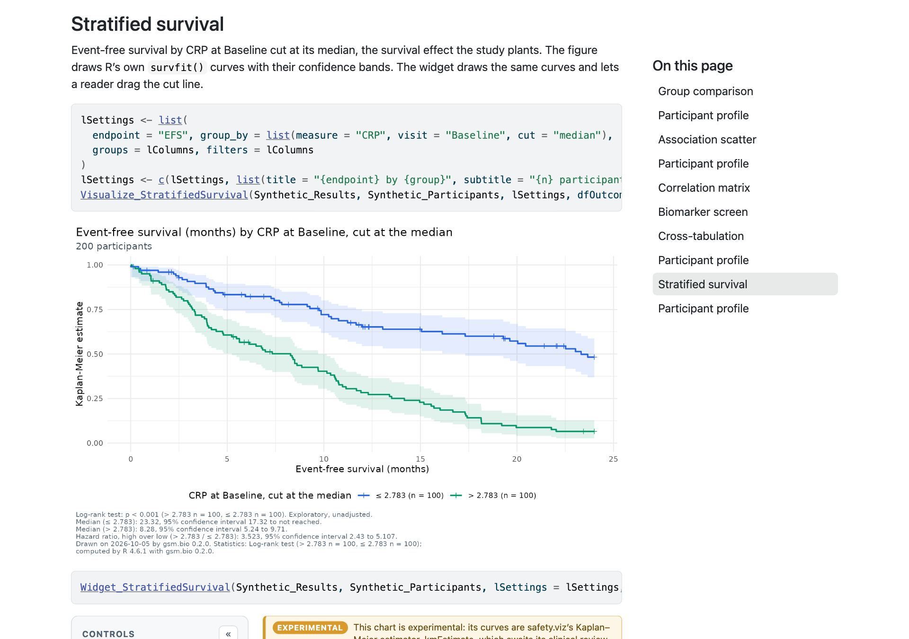
The gsm.bio gallery shows each of the six figures beside its widget, with the code that makes both. This is the survival pair.
What you should see
Try it in R
Open the gsm.bio galleryremotes::install_github("jwildfire/gsm.bio@dev").Widget_ for Visualize_ to get the ggplot figure.library(gsm.bio)
w <- Widget_StratifiedSurvival(
Synthetic_Results, Synthetic_Participants,
lSettings = list(
endpoint = "EFS",
group_by = list(measure = "CRP", visit = "Baseline", cut = "median")
),
dfOutcomes = Synthetic_Outcomes
)
htmlwidgets::saveWidget(w, "survival.html", selfcontained = TRUE)Six Table_*() functions return the statistics of a chart’s view as a data frame, one row per statistic, and Write_RTF() writes one, with its title and footnotes, to RTF for a document. Run_Specifications() takes the specifications bio.viz charts write and draws each one in R as a figure and an RTF table, into a folder, with a manifest of what it wrote. One specification can run across every biomarker.
From the browser to a folder of figures
The two specifications here were saved from the live demos above, the survival view and the cross-tabulation of Response by CRP, and handed to Run_Specifications() unchanged with bAcrossBiomarkers = TRUE. Each biomarker took CRP’s place, cut at its own median: 2 views times 12 biomarkers, all 24 written.
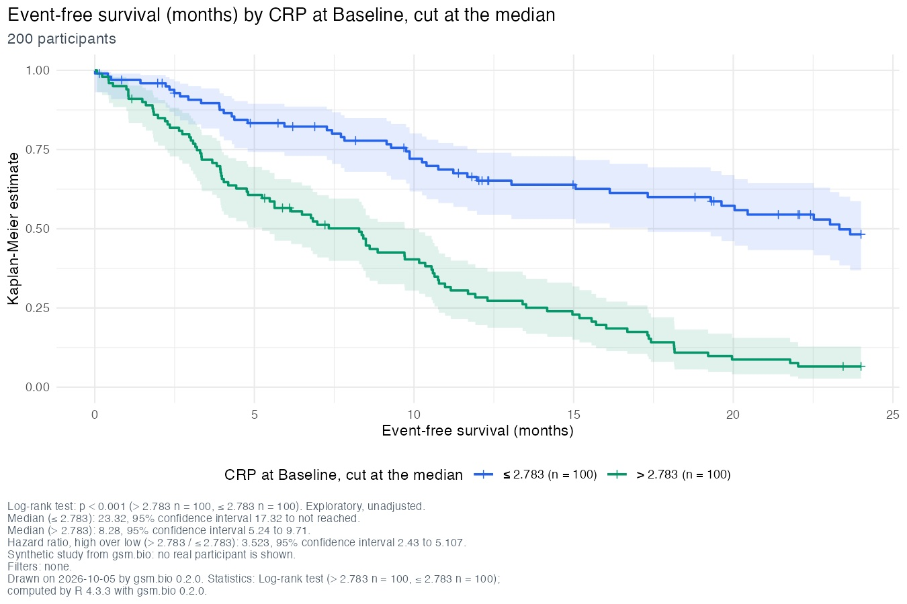
One of the 24 figures, 01-stratified-survival-crp.png, 9 by 6 inches.
105,900 01-stratified-survival-crp.png
6,060 01-stratified-survival-crp.rtf
106,733 01-stratified-survival-d-dimer.png
6,069 01-stratified-survival-d-dimer.rtf
… (10 more biomarkers)
57,170 02-cross-tab-crp.png
2,863 02-cross-tab-crp.rtf
… (11 more biomarkers)
19,661 manifest.json 105,900 01-stratified-survival-crp.png
6,060 01-stratified-survival-crp.rtf
106,733 01-stratified-survival-d-dimer.png
6,069 01-stratified-survival-d-dimer.rtf
105,391 01-stratified-survival-ferritin.png
6,060 01-stratified-survival-ferritin.rtf
108,296 01-stratified-survival-ifn-gamma.png
6,060 01-stratified-survival-ifn-gamma.rtf
107,358 01-stratified-survival-il-10.png
6,059 01-stratified-survival-il-10.rtf
106,067 01-stratified-survival-il-1beta.png
6,055 01-stratified-survival-il-1beta.rtf
105,343 01-stratified-survival-il-2.png
6,058 01-stratified-survival-il-2.rtf
107,292 01-stratified-survival-il-6.png
6,057 01-stratified-survival-il-6.rtf
105,731 01-stratified-survival-il-8.png
6,058 01-stratified-survival-il-8.rtf
105,559 01-stratified-survival-ldh.png
6,054 01-stratified-survival-ldh.rtf
107,314 01-stratified-survival-tnf-alpha.png
6,064 01-stratified-survival-tnf-alpha.rtf
107,051 01-stratified-survival-vegf.png
6,056 01-stratified-survival-vegf.rtf
57,170 02-cross-tab-crp.png
2,863 02-cross-tab-crp.rtf
57,743 02-cross-tab-d-dimer.png
2,867 02-cross-tab-d-dimer.rtf
57,017 02-cross-tab-ferritin.png
2,868 02-cross-tab-ferritin.rtf
58,435 02-cross-tab-ifn-gamma.png
2,869 02-cross-tab-ifn-gamma.rtf
57,163 02-cross-tab-il-10.png
2,865 02-cross-tab-il-10.rtf
56,719 02-cross-tab-il-1beta.png
2,868 02-cross-tab-il-1beta.rtf
56,510 02-cross-tab-il-2.png
2,864 02-cross-tab-il-2.rtf
57,418 02-cross-tab-il-6.png
2,864 02-cross-tab-il-6.rtf
56,770 02-cross-tab-il-8.png
2,864 02-cross-tab-il-8.rtf
52,866 02-cross-tab-ldh.png
2,795 02-cross-tab-ldh.rtf
57,656 02-cross-tab-tnf-alpha.png
2,869 02-cross-tab-tnf-alpha.rtf
58,018 02-cross-tab-vegf.png
2,864 02-cross-tab-vegf.rtf
19,661 manifest.jsonUnder its title, “Event-free survival (months) by CRP at Baseline, cut at the median” and “200 participants”:
| Statistic | Method | Estimate | Counts | p-value | Note |
|---|---|---|---|---|---|
| Log-rank test | Log-rank test | > 2.783 n = 100, ≤ 2.783 n = 100 | p < 0.001 | Exploratory, unadjusted. | |
| Median (≤ 2.783) | Kaplan-Meier, survfit() with the log-log interval | 23.32, 95% confidence interval 17.32 to not reached | |||
| Median (> 2.783) | Kaplan-Meier, survfit() with the log-log interval | 8.28, 95% confidence interval 5.24 to 9.71 | |||
| Hazard ratio, high over low (> 2.783 / ≤ 2.783) | Cox proportional hazards, coxph() | 3.523, 95% confidence interval 2.43 to 5.107 |
Its footnotes follow the table: the page’s two, then “Drawn on 2026-10-05 by gsm.bio 0.2.0. Statistics: Log-rank test (> 2.783 n = 100, ≤ 2.783 n = 100); computed by R 4.3.3 with gsm.bio 0.2.0.” The p-value follows the same display rules as the charts: exploratory, the adjustment named, no stars.
What you should see
Try it in R
Run_Specifications referencemanifest.json, then a figure and its RTF table.Run_Specifications(
"survival.json",
Synthetic_Results, Synthetic_Participants, Synthetic_Outcomes,
strFolder = "figures",
bAcrossBiomarkers = TRUE
)